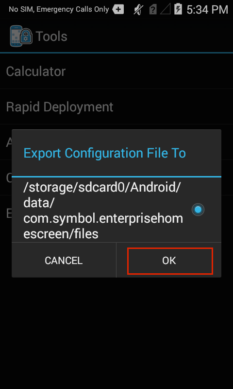

概述
本部分假设您已了解企业主页屏幕及其功能和主要工作的基础知识。对于不熟悉针对 Android 设备的 Zebra 免费安全工具的用户，请参阅关于和设置页面，然后再继续本指南。另请参阅特殊功能指南以了解有关 Kiosk 模式、安全模式和其他特殊 EHS 功能的信息。
企业主页屏幕的行为通过 enterprisehomescreen.xml 完全控制，这是一个可使用任何文本编辑器修改的易于读取的文件。文件的默认版本包含很多常见设备安全设置及一些标准应用程序，且是每个 EHS 安装的一部分。在很多实例中，开始使用 EHS 所需的一切是添加组织自己的应用程序且应用其首选安全和显示设置。
本指南介绍了如何单独使用配置文件添加应用程序和配置设置（如果还可以通过 GUI 配置设置，则显示屏幕截图）。它详细介绍了 EHS 和配置文件之间的交互，并提供针对公司特定要求访问和自定义文件及将设置部署到设备的说明。下面提供配置文件的详细分析，以及每个参数的说明和如何对其进行配置的示例。
注意：EHS 的许多功能都可在设备上手动实现，以编程方式通过 EMDK 实现，或使用 StageNow 或第三方移动设备管理 (MDM) 系统（如果受该 MDM 系统支持）远程实现。EHS 只是将功能置于单个工具中。
使用配置文件
本部分介绍 EHS 和 enterprisehomescreen.xml 配置文件之间的重要交互，及检索、修改文件和将文件部署到设备的说明。
配置文件位置
- 配置文件初始存储在设备上的
/enterprise/usr目录中。 - 此目录对大多数应用程序不可见，包括 Windows 资源管理器和 Android 文件传输 (Mac)。
- 该目录对 Android 文件浏览器可见，可用于管理其内容。
- 该文件可通过 Android Debug Bridge (ADB) "pull" 和 "push" 命令进行访问。
注意：在向用户显示文件浏览器时应该小心；它可用于处理 EHS 配置文件并更改安全或其他设置。
配置文件访问
使用 ADB
Android Debug Bridge (ADB) 是目前为止通过 "pull-edit-push-test" 循环用于通过 enterprisehomescreen.xml 文件配置和测试对 EHS 设置的更改的最有效方法。该流程需要通过 USB 连接到设备的 Mac 或 Windows PC（安装有 EHS）。有关软件设置的帮助，请参阅设置指南。
从连接到目标设备（安装有 EHS）的计算机：
1.使用 ADB 将配置文件从其默认位置拉动至本地 PC：
adb pull /enterprise/usr/enterprisehomescreen.xml2.使用文本编辑器查找、打开并编辑配置文件，保存更改。不得以任何方式更改文件名。
3.将已编辑的配置文件推送至设备：
adb push enterprisehomescreen.xml /enterprise/usr/enterprisehomescreen.xml重要说明：请确保将已编辑源文件的名称包括在 ADB push 命令中。不这样做可能会造成忽略更改。
此时会发生什么情况？
- 推送配置文件的新版本会覆盖旧版本文件。
- 如果 EHS 正在运行，则新设置立即生效。
- 如果 EHS 在后台运行，则新设置在 EHS 下次进入前台时生效。
其他说明
- 配置文件必须命名为 "
enterprisehomescreen.xml"（采用小写字母）。 - 采用任何其他拼写或字母大小写的文件将被忽略。
- 如果在任何时候删除配置文件，EHS 将生成具有默认设置的新配置文件。
- 如果已部署相同名称大小写混用的配置文件，将覆盖大小写格式正确的文件。
- 大小写格式不正确的配置文件将被视为缺失或导致不可预测的结果。
- 配置后，配置文件适用于使用 MDM 进行大规模部署（带或不带 EHS 应用程序）。
导出配置文件
对于设备故障排除和某些其他情况，有时使配置文件 (enterprisehomescreen.xml) 可见或查看文件或检查其设置非常有用。可通过将其导出到文件系统的可视区域来从“管理员模式”使文件可见。或者，可使用 Android 文件浏览器通过电子邮件或其他方法查看、复制、移动和共享配置文件。
注意：导出的文件可能保持对 PC 不可见，直至设备重新启动。
1.在“管理员模式”下，从设备“工具”菜单选择“导出配置文件”：
2.轻触“确定”以确认操作：
3.在确认消息中记下位置：
4.使用 Windows 资源管理器、Android 文件传输（所示）或类似方式将配置文件（箭头）拖动至 PC：
注意：导出的文件可能保持对 PC 不可见，直至设备重新启动。
使用文件浏览器
Android 文件浏览器提供一种快速查看设备上配置文件的方法。它还允许通过电子邮件、蓝牙或设备上启用的其他方式复制、移动或共享文件。
要查看设备上的配置文件：
1.在文件浏览器中，导航到 /enterprise/usr directory：
2.长按 enterprisehomescreen.xml 文件以显示“文件操作”菜单：
3.选择“打开方式..”以选择查看器，然后按“启动”：
可能还需要轻触 "txt" 以指定扩展名类型。
3.将在 Android HTML 查看器中打开配置文件：
默认配置文件
本部分介绍控制 EHS 行为所有方面的 enterprisehomescreen.xml 配置文件。默认版本如下所示，后跟文件 XML 标签的扩展名和每个的配置选项。
EHS 配置文件被分为五部分：
- Kiosk - 指定设备处于 Kiosk 模式下时要运行的单一应用程序。
- 应用程序 - 在设备处于用户模式下时要显示的应用程序。
- 工具 - 要从“用户”和“管理员”工具菜单列出和启动的应用程序。
- 密码 - 存储用于登录到管理员模式的加密密码。
- 首选项 - 控制将显示的功能和设置。
默认 enterprisehomescreen.xml 文件：
<?xml version="1.0" encoding="utf-8"?><kiosk><application label="Calculator" package="com.android.calculator2" activity=""/></kiosk><config><applications><application label="Calculator" package="com.android.calculator2" activity="com.android.calculator2.Calculator"/><application label="DWDemo" package="com.symbol.datawedge" activity="com.symbol.datawedge.DWDemoActivity"/></applications><tools><application label="Calculator" package="com.android.calculator2" activity=""/></tools><passwords><admin></admin></passwords><preferences><title>Enterprise Home Screen</title><icon_label_background_color>#00FFFFFF</icon_label_background_color><icon_label_text_color>#FFFFFFFF</icon_label_text_color><orientation></orientation><bypass_keyguard>1</bypass_keyguard><auto_launch_enable>0</auto_launch_enable><wallpaper></wallpaper><kiosk_mode_enabled>0</kiosk_mode_enabled><disable_status_bar_settings_icon>1</disable_status_bar_settings_icon><disable_statusbar_pulldown>0</disable_statusbar_pulldown><install_shortcuts>0</install_shortcuts><exit_instead_of_reboot>0</exit_instead_of_reboot><airplane_option_disabled>1</airplane_option_disabled><keyguard_camera_disabled>1</keyguard_camera_disabled><keyguard_search_disabled>1</keyguard_search_disabled><usb_debugging_disabled>1</usb_debugging_disabled><system_settings_restricted>1</system_settings_restricted></preferences></config>配置标签
本部分介绍 enterprisehomescreen.xml 文件中的所有标签及其可能的值。它们按照与在默认文件中显示的相同顺序如下所示，后跟可选标签。标签可按任何顺序显示，但必须包含在 <config> </config> 标签集中。
Kiosk
指定要在设备处于 Kiosk 模式下时运行的应用程序，这是一种单个应用程序可在其下填充屏幕且 BACK 和 HOME 键无法用于退出的可选模式。使用 <首选项> 部分中的 <kiosk_mode_enabled> 标签激活 Kiosk 模式。

可能的值：
- 标签：字符串
- 包：应用程序包名称
- 活动（可选）：要在应用程序启动时调用的活动的名称
示例
<kiosk><application label="Calculator" package="com.android.calculator2" activity=""/></kiosk>注意：对于运行 KitKat 的设备，在 Kiosk 模式下启动时，保持显示“请稍候”提示。按 HOME 键以启动 Kiosk 模式应用程序并恢复正常行为。
应用程序
指定当 EHS 处于用户模式下时要向用户显示的应用程序和/或浏览器链接。可选活动参数允许在应用程序启动时调用应用程序活动。某些应用程序将不启动，除非指定应用程序包和活动。
指定链接时，包和活动参数可用于使用特定应用程序（如 Mozilla Mobile 浏览器）启动 URL。如果未指定活动，EHS 将使用默认浏览器打开链接。
注意：包名称可能会因 Android 版本而异。
应用示例
可能的值（应用程序）：
- 标签：字符串
- 包：应用程序包名称
- *（星号）：用作通配符以指定具有相同前缀的多个包
- 不包括：与通配符一起使用以从通配符集忽略一个或多个应用程序
- 活动（可选）：要在应用程序启动时调用的活动的名称
使用通配符选择多个应用程序的样本 XML：
<applications> //The following lines: <application label="Packaging" package="com.mobility.packaging" activity=""/><application label="Online" package="com.mobility.online" activity=""/><application label="Remote" package="com.mobility.remote" activity=""/><application label="Inventory" package="com.mobility.inventory" activity=""/><application label="Orders" package="com.mobility.orders" activity=""/> //...could be replaced with this single line using the wildcard character: <application package="com.mobility.*"/> //...adding a label to line above applies the label to all apps in the wildcard set: <application label="RetailApps" package="com.mobility.*"/> //To exclude one or more apps from the wildcard set: <application package="com.mobility.*" exclude=”com.mobility.inventory”/> //The line above removes the "inventory" app. The line below removes both the "inventory" and "online" apps. <application package="com.mobility.*" exclude=”com.mobility.inventory; com.mobility.online”/></applications>使用通配符显示所有首字母为 "c" 的 Android 应用程序：
<applications><application label="" package="com.android.c*"/></applications>显示所有以字母 "c" 开头的 Android 应用程序（计算器除外）：
<applications><application label="" package="com.android.c*" exclude="com.android.Calculator2"/></applications>显示所有以字母 "c" 开头的 Android 应用程序（联系人和摄像头除外）：
<applications><application label="" package="com.android.c*" exclude="com.android.camera2;com.android.contacts"/></applications>通配符规则：
单个应用程序和通配符集将按 <applications> 节点中列出的相同顺序显示在“用户模式启动器”中。
每个通配符集中的应用程序将通过与该集中其他应用程序相关的标签按照字母顺序列出。
通配符搜索旨在与符合 "<any_name>.<any_name>*" 格式的包一起使用。
如果使用了包和图标属性，则相同的特定属性适用于所有选定通配符的应用程序。
通配符搜索仅与用户模式应用程序一起使用；它不支持“工具”菜单、“自动启动”或“Kiosk 模式”特定的应用程序。
无法在“管理员模式”下使用长按功能删除由通配符选定的应用程序。
无法在“管理员模式”下使用长按功能添加通配符搜索除外的应用程序。
排除属性不支持通配符；必须一次排除一个应用程序。
无法使用“排除”属性或标签排除 <applications> 节点中单独指定的应用程序和通配符搜索中包括的应用程序。
如果未在 XML 中定义标签，则选定通配符应用程序的标签将在其出现在 Android 清单中时应用于图标（如果未在清单中定义，应用程序将显示，具有空白标签）。
长度超过 18 个字符的标签将在第 18 个字符处截断且附加省略号 (...)。
在通配符搜索中指定的标签将应用于通过搜索识别的所有应用程序。
每行的通配符仅显示一次且显示在行尾。
作为安全措施，EHS 已阻止以下通配符搜索，从而避免意外包含所有标准 Android 应用程序：
- com.android.*
- com.android*
- com.androi*
- com.andro*
- com.andr*
- com.and*
- com.an*
- com.a*
- com.*
通配符搜索可包括 "com.androidX"，其中 X= 点 (.) 除外的任何字符。
enterprisehomescreen.log文件将存储由无效使用通配符产生的错误消息。始终从任何过滤的应用程序列表排除 EHS 应用程序和 EHS 安装程序。
URL 示例
可能的值 (URL)
- 标签：字符串
- 软件包：URL（http://、https:// 或 file://*.html）
样本 XML（Web 链接）
<applications> ... <link label="Mozilla Mobile" url="http://www.mozilla.org/en-US/mobile/" package="org.mozilla.firefox" activity="org.mozilla.firefox.App" /> ... </applications>在上述示例中，软件包和活动属性用于在 Mozilla Mobile 浏览器中启动 URL。如果设备上不存在指定的应用程序（如软件包和活动参数中的定义），将不显示 URL。如果未指定活动，EHS 将使用默认浏览器启动链接。
链接删除
要从“用户模式”屏幕删除 Web 链接：
- 删除整个标签（以 "<link label=" 开头，以 "/>" 结尾，如上所示），方法是：从
enterprisehomescreen.xml文件的 <applications> 节点删除。 - 将修改的
enterprisehomescreen.xml文件重新部署到设备。
工具
指定要在“管理员”和“用户”模式的“工具”菜单中列出的应用程序。注意：包名称可能会因 Android 版本而异。
可能的值：
- 标签：字符串
- 包：应用程序包名称
- 活动（可选）：要在应用程序启动时调用的活动的名称
示例
<tools> ... <application label="Calculator" package="com.android.calculator2" activity=""/> ... </tools>密码
存储用于登录到管理员模式的加密密码（默认为空白）。不得在配置文件中手动填充此标签或以任何方式对其进行编辑。在 EHS 管理员模式下通过“工具”菜单输入或更改后，将由 EHS 以编程方式在此处存储管理员密码。EHS 使用此标签将密码存储为 256 位 AES 加密散列值。在配置文件中创建和存储密码后，可对其及所有其他设置进行大规模部署。
必须使用 EHS GUI 中的“管理员工具”菜单输入和更改 管理员密码。
管理员密码。
可能的值：
- （仅使用 EHS；不得添加或编辑此标签的内容）
示例
<passwords><admin></admin></passwords>应用程序图标大小
允许将应用程序的大小设置为“小”、“中等”、“大”、“超大”和“特大”。图标大小可通过 enterprisehomescreen.xml 文件或设备 UI（处于“管理员”或“用户”模式下时）控制。
要通过 UI 更改图标大小：
在“管理员”或“用户”模式下，轻触“菜单”图标，然后选择“图标设置”： 图标大小可从“管理员”或“用户”模式查看且将应用于。
图标大小可从“管理员”或“用户”模式查看且将应用于。
轻触所需图标大小，然后轻触“确定”。将立即应用选定的大小。 “中等”（显示）是默认的图标大小。
“中等”（显示）是默认的图标大小。
 应用程序图标可以五种大小显示；更改对“管理员”和“用户”模式均适用。
应用程序图标可以五种大小显示；更改对“管理员”和“用户”模式均适用。
要通过 enterprisehomescreen.xml 文件设置图标大小：
可能的值：
- S = 小图标
- M = 中等图标
- L = 大图标
- XL = 超大图标
- XXL = 特大图标
示例
<user_options><icon_settings><app_icon_size>XL</app_icon_size></icon_settings><user_options>首选项
控制与 EHS 首选项 UI 面板中配置的选项相对应的 EHS 行为、安全和显示设置的各个方面。单独首选项的标签可按任何顺序显示，但必须包含在 <preferences></preferences> 节点中。
标题
为 EHS 应用程序指定标题栏文本。可将默认的标题“企业主页屏幕”更改为任何字符串。

可能的值：
- 字符串
示例
<preferences><title>MetaCorp Home Screen</title></preferences>标题栏图标已禁用
控制是否在标题栏中显示图标。0（否）值将允许 EHS 显示自定义图标。

可能的值：
- 1（默认情况下禁用）
- 0
示例
<preferences><title_bar_icon><title_bar_icon_disabled>0</title_bar_icon_disabled><title_bar_icon_file>/storage/sdcard0/Android/data/com.symbol.enterprisehomescreen/files/title.jpg</title_bar_icon_file ></title_bar_icon ></preferences>标题栏图标文件
允许指定图像以显示在 EHS 标题栏中。支持中分辨率 .bmp、.jpg 和 .png 图像格式（因设备而异；某些高分辨率图像可能不显示）。图像必须被存储到本地设备上且在enterprisehomescreen.xml 文件或 UI 中指定（使用完整路径）。将使用图像的纵横比调整（上或下）图像，以填充可用空间（因设备而异）。如果标签缺失或留空，或指定的图标缺失或无效，将显示默认 EHS 图标（如下所示）。

可能的值：
- .bmp、.jpg 或 .png 文件完全限定的本地（设备上）
示例
<preferences><title_bar_icon><title_bar_icon_disabled>0</title_bar_icon_disabled><title_bar_icon_file>/storage/sdcard0/Android/data/com.symbol.enterprisehomescreen/files/title.jpg</title_bar_icon_file ></title_bar_icon ></preferences>图标标签背景
指定在用户模式下显示的应用程序图标标签文本的背景颜色。默认背景为 #00FFFFFF，该背景透明，不透明度值为 00（从 00 到 FF 的范围）。获取选择 HTML 色码帮助。

代码密钥：
- AA 指定不透明度
- RR 指定红色级别
- GG 指定绿色级别
- BB 指定蓝色级别
可能的值：
- HTML 十六进制色码值具有或无不透明度前缀（#RRGGBB 或 #AARRGGBB）
- 颜色名称：红色、蓝色、绿色、黑色、白色、灰色、青色、紫红色、黄色、浅灰色和深灰色。
示例
<preferences><icon_label_background_color>#00FFFFFF</icon_label_background_color><icon_label_background_color>#75A319</icon_label_background_color><icon_label_background_color>#80EF671B</icon_label_background_color><icon_label_background_color>magenta</icon_label_background_color></preferences>图标标签文本颜色
指定在用户模式下显示的应用程序图标标签文本的颜色。EHS 默认图标文本颜色为 #FFFFFFFF，该背景为白色，不透明度值为 FF（从 00 到 FF 的范围）。获取选择 HTML 色码帮助。

代码密钥：
- AA 指定不透明度
- RR 指定红色级别
- GG 指定绿色级别
- BB 指定蓝色级别
可能的值：
- HTML 十六进制色码值具有或无不透明度前缀（#RRGGBB 或 #AARRGGBB）
- 颜色名称：红色、蓝色、绿色、黑色、白色、灰色、青色、紫红色、黄色、浅灰色和深灰色。
示例
<preferences><icon_label_text_color>#FFFFFFFF</icon_label_text_color><icon_label_text_color>#75A319</icon_label_text_color><icon_label_text_color>#80EF671B</icon_label_text_color><icon_label_text_color>magenta</icon_label_text_color></preferences>方向
允许将屏幕方向固定为水平或纵向模式。忽略或将此设置留空（默认）允许 Android 系统设置来控制屏幕方向。
在运行 Android L 及更高版本的设备上：仅可在将 EHS 设置为接受系统方向设置（EHS 默认）时通过“快速设置”面板更改屏幕方向。如果 EHS 管理员将方向设置为横向或纵向模式，则设备用户将无法再更改方向设置。

可能的值：
- 水平
- 纵向
- <空>（接受系统设置；EHS 默认）
示例
<preferences><orientation></orientation></preferences>自动启动启用（应用程序）
在 EHS 启动后启用一个或多个自动启动的应用程序。可与可选 <auto_launch> 部分一起使用。启用后，将在特定延迟后启动 <auto_launch> 部分指定的应用程序。BACK 和 HOME 键可用于退出应用程序。请参阅“可选功能标签”部分以了解更多信息。默认情况下禁用。另请参阅：Kiosk 模式。

可能的值：
- 1
- 0（默认值）
示例
<preferences><service_auto_launch_enable>0</service_auto_launch_enable></preferences>服务自动启动启用
在 EHS 启动后启用一个或多个自动启动的服务。可与可选 <service_auto_launch> 部分一起使用。启用后，将在一定延迟（如指定）后启动 <service_auto_launch> 部分指定的应用程序。可在 enterprisehomescreen.xml 文件或管理员模式 UI 中启用/禁用服务自动启动功能；必须在配置文件中指定服务。请参阅“可选功能标签”部分以了解详细信息。默认情况下禁用。

可能的值：
- 1
- 0（默认值）
示例
<preferences><service_auto_launch_enable>1</service_auto_launch_enable></preferences>墙纸
允许指定要在用户模式下显示的背景图像。如果未指定，将显示系统的默认图像。仅在 /enterprise/usr 目录中支持 .PNG 格式文件。支持的分辨率因设备而异。如果无法显示选定的图像，Zebra 建议按比例缩小分辨率或选择不同的图像。

可能的值：
- 文件完全限定的本地（设备上）路径
示例
<preferences><wallpaper>/enterprise/usr/mybackground.png</wallpaper></preferences>墙纸拉伸
用于启用/禁用要在用户模式下显示以拉伸来填充屏幕的背景图像。默认情况下禁用。如果未指定此值，则禁用拉伸。请参阅“墙纸参数”以了解支持的文件格式和位置。

采用默认墙纸的 EHS：
已禁用拉伸（默认）采用自定义墙纸图像：
已启用拉伸采用自定义墙纸图像：
可能的值：
- 1（已启用拉伸）
- 0（默认值）
示例
<preferences><wallpaper_stretching_enabled >0</wallpaper_stretching_enabled ></preferences>全屏
通过将此标签的值设置为 1，可使 EHS 在全屏模式下运行。默认值为 0。仅适用于 EHS；从 EHS 启动的应用程序将起到单独设计的作用。在某些设备上，将不会阻止对 Android 状态/通知栏的访问。请参阅禁用状态栏设置以在 EHS 中阻止用户访问此功能。

可能的值：
- 1（将 EHS 设置为在全屏模式下运行）
- 0（默认值）
示例
<preferences><fullscreen>1</fullscreen></preferences>已启用 Kiosk 模式
造成 <kiosk> 部分中指定的应用程序在 EHS 启动后以全屏模式启动，且阻止使用 BACK 和 HOME 键来退出应用程序。默认情况下禁用。另请参阅：自动启动。在 Android L 设备上：Kiosk 模式不应与屏幕固定一起使用，这是一种 Android L 中提供类似功能的功能。
启用后，如果已启用 USB 调试，则可通过推送新配置文件、将此标签集设置为 0 来禁用 Kiosk 模式。否则，需要恢复出厂设置。
可能的值：
- 1
- 0（默认值）
示例
<kiosk_mode_enabled>0</kiosk_mode_enabled>注意：对于运行 KitKat 的设备，在 Kiosk 模式下启动时，保持显示“请稍候”提示。按 HOME 键以启动 Kiosk 模式应用程序并恢复正常行为。
禁用状态栏设置
控制设置图标是否显示在 Android 状态栏中，及用户是否可访问设置面板。并非在所有设备上都受支持。此标签中的 0 设置将启用状态栏设置图标。
在 Android L 设备上：UI Manager 中的新功能允许通过 EMDK、StageNow 或第三方 MDM 系统控制状态栏设置图标（UI Manager 将其称为“通知快速设置”图标）。这将覆盖任何用于控制状态栏设置图标的 EHS 设置。仅适用于具有 MX 6.0 及更高版本的设备，适用于 Android Lollipop 及更高版本；之前的任何设备限制仍适用。

注意：更改此设置将会导致自动设备重新启动，从而使更改生效。
可能的值：
- 1（默认值）
- 0
示例
<disable_status_bar_settings_icon>1</disable_status_bar_settings_icon>禁用状态栏下拉菜单
控制 Android 状态栏是否可下拉，以显示控件和通知。默认情况下，状态栏下拉菜单已启用。如果忽略此标签，包含 0 值或留空，将启用状态栏下拉菜单。要禁用，输入 1 值。
注意：在运行 Android L、M 或 N 的设备上，无法通过 EHS 控制状态栏下拉菜单（在这些设备上，该功能在“管理员模式首选项”面板中显示为“灰色”）。要控制状态栏下拉菜单（也称为“通知下拉菜单”），请通过 Zebra EMDK 或 StageNow 工具使用 UI Manager。

可能的值：
- 1
- 0（默认值）
示例
<disable_statusbar_pulldown>0</disable_statusbar_pulldown>安装快捷方式
控制是否可通过 Android Intent 将快捷方式添加到本地或远程应用程序。默认情况下禁用。

可能的值：
- 1
- 0（默认值）
示例
<install_shortcuts>0</install_shortcuts>退出，而非重新启动
控制 EHS 是否将在需要重新启动的设置更改时触发自动设备重新启动。允许移动设备管理 (MDM) 系统在进行此类更改后保持设备控制。注意：如果 <reboot_on_install_enabled> 标签具有值 1，将覆盖此标签中的设置。
可能的值：
- 1
- 0（默认值）
示例
<exit_instead_of_reboot>0</exit_instead_of_reboot>“安装时重新启动”已启用
控制设备是否将在 EHS 成功安装后首次启动时（以激活 EHS）自动重新启动。允许移动设备管理 (MDM) 系统在安装后保持设备控制。默认情况下，禁用自动设备重新启动。注意：启用后，此标签将覆盖 <exit_instead_of_reboot> 标签的任何设置。
可能的值：
- 1
- 0（默认，请勿重新启动）
示例
<preferences><reboot_on_install_enabled>0</reboot_on_install_enabled ></preferences>飞行选项已禁用
控制是否可从“电源”菜单或“快速设置”栏将设备置于“飞行模式”。飞行模式可禁用蓝牙、蜂窝、Wi-Fi 和/或无线对讲机及功能，具体取决于设备。默认情况下或如果此标签缺失或未指定，则 EHS 会阻止对飞行模式的访问。输入 0 值可允许设备进入飞行模式。
注意：在运行 Android M 或 N 的设备上或一些运行 Android L 的设备上，无法通过 EHS 控制已禁用飞行选项功能。对于“已禁用飞行选项”功能在其上管理员模式首选项面板中显示为“灰色”的设备，仍可通过 Zebra EMDK 或 StageNow 工具使用电ower Key Manager 访问该功能。

可能的值：
- 1（默认值）
- 0
示例
<airplane_option_disabled>1</airplane_option_disabled>绕过锁屏
控制是否在设备开机时显示锁屏（也称为“锁定屏幕”）。默认情况下，绕过锁屏（未显示）。此标签中的 0 设置将启用锁屏。
备注
在运行 Android L 的设备上，“绕过锁屏”功能无法在重新启动设备后解锁屏幕。
在具有 MX 多用户功能的设备上，此标签的 1 设置将阻止显示多用户登录屏幕。请参阅涉及 EHS 和 MX 多用户功能之间交互的重要安全备注。
 Android 锁屏（也称为“锁定屏幕”）。
Android 锁屏（也称为“锁定屏幕”）。

可能的值：
- 1（默认，不显示锁屏）
- 0
示例
<bypass_keyguard>1</bypass_keyguard>锁屏摄像头已禁用
控制在将屏幕锁定设置为“滑动”模式时，是否可从锁屏（还称为“锁定屏幕”）访问设备摄像头。如果此标签值为 1（默认）或留空，则禁用从锁屏访问摄像头。
仅在所有以下条件为是时禁用锁屏摄像头：
- 在设备上启用了摄像头应用程序
- 锁屏处于“滑动”模式
- 摄像头图标在锁屏上可见
- 未使用 <bypass_keyguard> 标签绕过锁屏
除非以上所有四个条件均为是，否则将忽略此标签中的值。
注意：
- 如果设备锁定屏幕上不存在摄像头快捷方式，则无需使用此标签。
- 即使在用户模式下明确允许使用摄像头功能，禁用从锁定屏幕访问摄像头应用程序还会从用户模式屏幕禁用该功能（某些设备上）。如果从锁定屏幕重新启动设备，则会出现此情况。提供两个可防止此情况的选项。请参阅下面的“用户模式摄像头使用”部分。
要防止使用摄像头，Zebra 建议使用此标签并从“用户模式”屏幕删除摄像头应用程序。

可能的值：
- 1（默认值）
- 0
示例
<keyguard_camera_disabled>1</keyguard_camera_disabled>用户模式摄像头使用
在某些设备上，即使在设备上允许使用摄像头，禁用从锁定屏幕访问摄像头应用程序还会从用户模式屏幕禁用该功能。如果从锁定屏幕重新启动设备，则会出现此情况；提供两个可防止此情况的选项。
选项 1：允许从锁定屏幕访问摄像头应用程序
如果允许用户从用户模式访问摄像头应用程序，则某些组织也可能允许直接从锁定屏幕访问，而无需解锁设备。对于此类情况，修改 enterprisehomescreen.xml 文件（如下所示）。
要允许从锁定屏幕访问摄像头应用程序：
// Allow camera access: <keyguard_camera_disabled>0</keyguard_camera_disabled> // Display lock screen: <bypass_keyguard>0</bypass_keyguard>选项 2：将摄像头应用程序添加到“已启用”列表
要允许仅在设备解锁后访问摄像头应用程序，将 <keyguard_camera_disabled> 值设置为 "1"，然后将摄像头应用程序的包名称添加到 enterprisehomescreen.xml 文件中的（可选） <apps_enabled> 列表中，如下所示。如果文件中不存在此可选参数的此类标签，请参阅启用/禁用应用程序以获取添加帮助。
要允许仅在设备解锁后访问摄像头应用程序：
<keyguard_camera_disabled>1</keyguard_camera_disabled><bypass_keyguard>0</bypass_keyguard> ... <apps_enabled> ... <application package="camera.app.package.name"/> // i.e. "com.android.camera2" ... </apps_enabled>注意：摄像头应用程序的包名称可能会因设备、Android 版本或其他因素而异。
锁屏搜索已禁用
控制在将屏幕锁定设置为“滑动”模式时，是否可从锁屏（还称为“锁定屏幕”）访问搜索应用程序。如果此标签值为 1（默认）或留空，则禁用从锁屏访问搜索功能。
仅在所有以下条件为是时适用：
- 在设备上启用了搜索应用程序
- 锁屏处于“滑动”模式
- 搜索图标在锁屏上可见
- 未使用 <bypass_keyguard> 标签绕过锁屏
除非以上所有四个条件均为是，否则将忽略此标签中的值。注意：如果设备锁定屏幕上不存在搜索应用程序快捷方式，则无需使用此标签。
要防止使用搜索功能，Zebra 建议使用此标签并从“用户模式”屏幕删除搜索应用程序。
注意：即使在用户模式下明确允许使用搜索功能，禁用从锁定屏幕访问搜索应用程序还会从用户模式屏幕禁用该功能（某些设备上）。如果从锁定屏幕重新启动设备，则会出现此情况。提供两个可防止此情况的选项。请参阅下面的“用户模式搜索使用”部分。

可能的值：
- 1（默认值）
- 0
示例
<keyguard_search_disabled>1</keyguard_search_disabled>用户模式搜索使用
在某些设备上，即使在设备上允许使用搜索功能，禁用从锁定屏幕访问搜索应用程序还会从用户模式屏幕禁用该功能。如果从锁定屏幕重新启动设备，则会出现此情况；提供两个可防止此情况的选项。
选项 1：允许从锁定屏幕访问搜索应用程序
如果允许用户从用户模式访问搜索应用程序，则某些组织也可能允许直接从锁定屏幕访问，而无需解锁设备。对于此类情况，修改 enterprisehomescreen.xml 文件（如下所示）。
要允许从锁定屏幕访问搜索应用程序：
// Allow search access: <keyguard_search_disabled>0</keyguard_search_disabled> // Display lock screen: <bypass_keyguard>0</bypass_keyguard>选项 2：将搜索应用程序添加到“已启用”列表
要允许仅在设备解锁后访问搜索应用程序，将 <keyguard_search_disabled> 值设置为 "1"，然后将搜索应用程序的包名称添加到 enterprisehomescreen.xml 文件中的（可选）<apps_enabled> 列表中，如下所示。如果文件中不存在此可选参数的此类标签，请参阅启用/禁用应用程序以获取添加帮助。
要允许仅在设备解锁后访问搜索应用程序：
<keyguard_search_disabled>1</keyguard_search_disabled><bypass_keyguard>0</bypass_keyguard> ... <apps_enabled><application package="search.app.package.name"/> // i.e. "com.android.search" </apps_enabled>USB 调试已禁用
控制在设备处于用户模式下时，是否允许在设备和计算机之间通过 USB 进行通信。如果采用值为 1 的设置（默认）或未指定，将阻止用户访问设备上的文件系统和所有 ADB 功能。此设置对于管理员模式无影响，在该模式下，始终启用 USB 通信。Zebra 建议手动将 USB 调试返回到其所需状态，然后再卸载 EHS。

可能的值：
- 1（默认值）
- 0
示例
<usb_debugging_disabled>1</usb_debugging_disabled>系统设置限制
控制在设备处于用户模式下时是否提供完整或限制设置。如果采用值为 1 的设置（默认）或未指定，将限制用户对设备设置的访问。采用值为 0 的设置将允许用户访问所有设备设置。

可能的值：
- 1（默认值）
- 0
示例
<system_settings_restricted>1</system_settings_restricted>注意和警告：
要使用此设置，必须事先使用启用/禁用应用程序功能明确启用系统设置应用程序。
此模式通过阻止在 UI 中显示某些功能，从而限制用户对其的访问。它不会自行阻止功能；在某些情况下，Android 限制用户访问设置。例如，如果设备电池电量非常低，Android 在低电池电量低警告显示屏中提供对应用程序的访问，因此，它们可能会停止、禁用或卸载。只能通过完全禁用设置应用程序来阻止此操作。
如果系统设置受限，仍可通过第三方快捷方式创建者将快捷方式添加到受限的系统设置组件（即，应用程序）。但是，此类快捷方式在用户模式下可用。如果系统设置组件应仅供管理员访问，则不应使用快捷方式进行映射。
卸载 EHS 将不会将受限系统设置恢复至其原始状态。如果需要，必须手动完成此操作，然后再卸载 EHS。
“最近应用程序”按钮已禁用
仅适用于运行 Android Nougat 和更高版本的设备。控制“最近应用程序”按钮是否可能用于启动未经批准的应用程序和/或非 EHS 主页屏幕。设置应用于管理员和用户模式。默认情况下，仅在 Nougat 设备上禁用“最近应用程序”按钮；对于其他设备，均启用。如果此标签为空，配置文件中缺失或包含无效的值，将使用默认值。请参阅重要 EHS 安全备注。
删除 EHS 后，此设置保留。
 无法在运行 Android L 或 M（所示）的设备上禁用“最近应用程序”按钮。
无法在运行 Android L 或 M（所示）的设备上禁用“最近应用程序”按钮。
可能的值：
- 1（默认情况下禁用）
- 0
示例
<preferences><Recent_apps_button_disabled>1</Recent_apps_button_disabled></preferences>日志记录已禁用
控制 EHS 活动、故障和安全事件的日志记录。这些包括进入管理员模式、操作模式切换的失败尝试以及所有 EHS 错误。默认情况下已启用。将日志作为纯文本格式存储在 /enterprise/usr/enterprisehomescreen.log 文件中，可使用 ADB 或 MDM 检索日志，并使用任何文本编辑器进行查看。

可能的值：
- 1
- 0（默认情况下已启用日志记录）
示例
<logging><logging_disabled>0</logging_disabled></logging>日志文件最大大小
允许为 EHS 日志文件指定的最大大小（以 MB 为单位）。达到最大文件大小后，将当前日志重命名为 enterprisehomescreen.log.bak（如果有，覆盖现有 .bak 文件），并创建新 enterprisehomescreen.log 文件。由于两个最大大小的日志文件将在某些时间段出现，这将有效地将特定最大存储要求提升两倍。

可能的值：
- 1-99999 范围内的整数
- 默认值 = 10 (MB)
示例
<logging><log_file_max_size>10</log_file_max_size></logging>可选功能标签
本部分介绍了默认情况下不包括在 enterprisehomescreen.xml 文件中的可选功能和标签。可通过 EHS 为已启用选项添加这些标签，或根据需要由管理员添加。
自动启动
允许在 EHS 启动时启动的应用程序数量。与 Kiosk 模式类似，可以通过特定应用程序活动（可选）启动在独立部分中指定的自动启动应用程序，且可通过“首选项”部分中的标签激活该功能。注意：包名称可能会因 Android 版本而异。
自动启动与 Kiosk 模式的不同在于可以使用 BACK 和 HOME 键，且它允许将应用程序设置为在指定延迟后启动，从而允许用于 SD 卡安装。适用于 <auto_launch_enable> 标签包含 1 值时；其他情况忽略。无需在 <applications> 部分列出自动启动应用程序。
重要说明：应用程序和服务自动启动的延迟时间均同时开始 - 当 EHS 首次启动时（与其他应用程序或服务相关）。例如，如果为应用程序 1 提供 2000 ms 延迟，为应用程序 2 提供 4000 ms 延迟，为服务 1 提供 3000 ms 延迟且为服务 2 提供 1000 ms 延迟，则执行顺序为：
- 应用程序 1 为在 EHS 启动后两秒
- 服务 1 为晚一秒（EHS 启动后 3000 ms）
- 服务 2 为晚一秒（EHS 启动后 3000+1000 ms）
- 应用程序 2 为晚两秒（EHS 启动后 2000 + 4000 ms）
可能的值：
- 应用程序延迟：整数（以毫秒为单位）
- 包：应用程序包名称
- 活动（可选）：要在应用程序启动时调用的活动的名称
示例
<auto_launch><application delay="8000" package="com.android.calculator2" activity=""/><application delay="5000" package="com.rovio.angrybirds" activity=""/></auto_launch>服务自动启动
允许在 EHS 启动时启动的服务数量。作为一种检查软件更新的方法，它很有用。必须在 enterprisehomescreen.xml 文件中的独立部分指定自动启动服务。可在管理员 UI 或使用“首选项”部分中的标签激活该功能。无需在 <applications> 部分列出自动启动服务。
重要说明：应用程序和服务自动启动的延迟时间均同时开始 - 当 EHS 首次启动时（与其他应用程序或服务相关）。对于每种类型，延迟时间累积。例如，如果为应用程序 1 提供 2000 ms 延迟，为应用程序 2 提供 4000 ms 延迟，为服务 1 提供 3000 ms 延迟且为服务 2 提供 1000 ms 延迟，则执行顺序为：
- 应用程序 1 为在 EHS 启动后两秒
- 服务 1 为晚一秒（EHS 启动后 3000 ms）
- 服务 2 为晚一秒（EHS 后 3000+1000 ms）
- 应用程序 2 为晚两秒（EHS 后 2000 + 4000 ms）
EHS 2.4 显示在 UI 中启用了服务自动启动。
可能的值：
- 服务延迟：在启动服务之前延迟的时间长短（以 ms 为单位）
- 包：服务的应用程序包名称
- 类：服务的类名称
- 操作：允许要指定服务支持的操作之一
注意：包名称可能会因 Android 版本而异。
服务自动启动规则：
- 仅可使用包名称自动启动支持单一操作的服务。
- 对于支持多个操作的服务，必须单独指定每个所需操作。
- 对于支持多个类的服务，必须指定正确的类。
- 服务自动启动对于手动启动服务无影响。
示例
指定所有参数：
<service_auto_launch><service delay="4000" package="com.sample.androidserviceexample" class="com.sample.androidserviceexample.MyService" action="downloadfile"/></service_auto_launch>指定包、类和操作名称：
<service package="com.sample.androidserviceexample" class="com.sample.androidserviceexample.MyService" action="com.sample.androidserviceexample.MyService.downloadfile"/>指定包和类名称：
<service package="com.sample.androidserviceexample" class="com.sample.androidserviceexample.MyService"/>仅指定包名称（仅当包中存在一个服务时）：
<service package="com.sample.androidserviceexample" />仅指定服务操作名称：
<service action="com.sample.androidserviceexample.MyService.downloadfile"/>捆绑包
在用户模式下启动时，允许通过 XML 将键值对注入到应用程序中的选项。捆绑数据可包括应用程序参数、用户数据或由应用程序（作为 Android Intent）使用的任何其他信息。此功能可与用户模式应用程序、Kiosk 应用程序、自动启动应用程序和通过通配符搜索得到的应用程序一起使用。与使用通配符属性指定的应用程序一起使用时，所有应用程序接收相同的数据。捆绑包标签必须在 enterprisehomescreen.xml 文件中配置。捆绑包不支持用于管理员模式应用程序或与链接或服务一起使用。
捆绑包备注：
- 捆绑数据作为字符串处理；应用程序用于根据需要转换数据类型。
- 捆绑包的密钥和值部分用等号 (=) 隔开。
- 捆绑包按分号 (;) 隔开。
- 不支持用于管理员模式应用程序或链接或服务。
可能的值：
- 字符串
示例
<applications><application label="Inventory" package="com.access.inventory" activity=" com.access.inventory.Login" bundle="username=John Brown;country=USA;date=090615"/></applications>图标
在用户模式屏幕上显示时，允许要为应用程序或链接在系统中指定的自定义图形或默认图标。支持 .bmp、.jpg 和 .png 图像格式。图像必须被存储到本地设备上且在 enterprisehomescreen.xml 文件中指定（使用完整路径）。如果标签留空或指定图标缺失或无效，将使用默认图标。与使用通配符属性指定的应用程序一起使用时，所有应用程序将显示相同的图标。与 EHS 安全模式兼容。
示例
更换应用程序图标：
<application label="DWDemo" package="com.symbol.datawedge" icon="/sdcard/datawedge/demo.png"/>更换链接图标：
<link label="yahoo" url="http://www.yahoo.com" package="org.mozilla.firefox" activity="org.mozilla.firefox.App" icon="/enterprise/usr/customfirefox.jpg" />为通过特定活动启动的应用程序更换图标：
<application label="WebMenu" package="com.symbol.rdp" activity="com.symbol.rdp.SessionActivity" icon="/enterprise/usr/ehs_data/images/webmenu.bmp"/>启用/禁用应用程序
允许设备上在管理员和用户模式下明确禁用或启用的应用程序。使用这些标签以在用户模式下启用“设置”和/或“搜索”应用程序。（即使应用 <apps_disabled> 标签，可始终在管理员模式下启用“设置”和“搜索”应用程序）。对于所有其他应用程序，适用于管理员和用户模式。注意：包名称可能会因 Android 版本而异。

注意：
- 由这些标签定义的设置会覆盖 EHS 默认设置及采用其他标签的任何设置。
- 如果仅存在这些标签之一，将在用户模式下禁用设置和搜索应用程序。
- 如果（启用和禁用）标签下存在相同的包名称，将禁用该应用程序。
- 卸载 EHS 将无法重新启用使用 <apps_disabled> 标签禁用的应用程序。
- 在卸载 EHS 之前，必须手动将已禁用的应用程序恢复至其所需状态。
- 要重新启用使用 <apps_disabled> 标签禁用的应用程序，必须使用 <apps_enabled> 标签明确启用该应用程序。
- 在设备用户截取屏幕截图后，某些 Android 版本将以共享图像的方式呈现应用程序（如 Gmail、短信等）。禁用此类应用程序可防止不必要的访问。
- 这些标签无法用于禁用 DataWedge 或其他服务。
可能的值：
- 包：应用程序包名称
示例
<preferences> ... <apps_disabled><application package="com.android.settings"/><application package="com.android.quicksearchbox"/></apps_disabled><apps_enabled><application package="com.android.gallery3d"/></apps_enabled> ... </preferences>管理员最多尝试次数
在 EHS 禁用管理员模式登录之前尝试登录到管理员模式失败的次数。EHS 通过密码管理员节点中的属性保存累积登录尝试失败的次数（如下面的失败登录计数器示例中所示）。如果在达到最大数量之前成功登录，将重置计数器。禁用后，仅可通过向设备推送 enterprisehomescreen.xml 文件进行重置。如果此标签不存在或无值，将使用默认值 10。将失败的登录尝试次数添加到 EHS 日志。

示例
<preferences> ... <admin_max_attempts>10</admin_max_attempts> ... </preferences>失败的登录计数器示例：
<passwords><admin attempts="10"></admin></passwords>在成功登录后或向设备推送新enterprisehomescreen.xml 文件时清除计数器。
管理员无操作超时
控制设备将留在管理员模式下的时间（以秒为单位），无活动。将此标签添加到 <首选项> 部分以指定超时时间段。默认时间段为 60 秒，如果此标签缺失或未指定，将使用此默认值。最小时间段为 15 秒（对于更小的值，将忽略）；零或负值会禁用超时。超时计数器仅在 EHS 处于前台时运行，且在 EHS 恢复至前台时重置。注意：使用 Android 搜索应用程序对于超时计数器无影响。

可能的值：
- 整数（以秒为单位）
注意：
- 最小值为 15；对于更小的值，将忽略
- 如果标签留空或不存在，将使用默认值 60 秒
- 0 或负值将禁用超时功能
示例
<preferences><admin_inactivity_timeout>600</admin_inactivity_timeout></preferences>通过 Android Intent 添加应用程序/快捷方式
在使用 Android Intent 添加链接到本地或远程应用程序的快捷方式时，EHS 将通过下列属性将链接标签添加到配置文件。默认情况下禁用。必须使用安装快捷方式标签启用。注意：包名称可能会因 Android 版本而异。
标签
表示快捷方式名称；等于 Intent.EXTRA_SHORTCUT_NAME 值。
URI
以文本格式表示 Intent；等于 Intent.EXTRA_SHORTCUT_INTENT Intent 数据的 URI 展示。
图标
指定设备中存储的图标文件的路径。如果在接收的广播 Intent 中提供额外数据 Intent.EXTRA_SHORTCUT_ICON，该图标将以图像文件的格式存储在设备中。
icon_ref
指定包名称以稍后进行检索。如果接收的广播 Intent 中提供额外数据 Intent.EXTRA_SHORTCUT_ICON_RESOURCE，将使用该包名称在运行时生成图标（因此，无需在设备中存储图标图像）。
示例
通过 Citrix Receiver 添加到远程应用程序 "Microsoft Excel" 的快捷方式由以下链接节点表示：
<link label="Microsoft Excel" icon="/enterprise/usr/ehs_data/images/MicrosoftExcel.png" uri="citrixreceiver://launchapp?pid=1&inname=citrixcloud%3AMicrosoft+Excel+MS&fname=Microsoft+Excel&shortcutCookie=681181718&mobile=0&unikey=0#Intent;action=android.intent.action.VIEW;launchFlags=0x14000000;end" />EHS 备注：
- 启用安装快捷方式后，EHS 收听 Android 广播 Intent
com.android.launcher.action.INSTALL_SHORTCUT。 - 接收 Intent 后，EHS 使用在 Intent 中执行的数据在用户屏幕上创建快捷方式。
- 数据还保存在
enterprisehomescreen.xml文件的 <applications> 部分，如上所示。 - 要从用户屏幕删除快捷方式，从配置文件删除相应的“链接”标签。
- 允许为相同的本地或远程应用程序添加重复快捷方式。
- 在安装 EHS 且选择默认启动器后，必须添加旨在由 EHS 使用的快捷方式。
- EHS 不检查快捷方式的有效性；由管理员确保快捷方式在所有情况下均有效。
Android 备注：
- Android 启动器监控与 EHS 相同的广播 Intent，因此，它还接收发送至 EHS 的快捷方式。
- 如果达到 Android 主页屏幕空间限制，Android 启动器将在 EHS 中显示错误消息。
- 要消除错误消息，请临时启用 Android 启动器并删除快捷方式。
应用程序启动标志
EHS 支持在启动应用程序后指定一个或多个 Android Intent 标志的选项，从而覆盖在 Android 清单中静态定义的任何 Intent 标志。这可用于允许不通过其主要活动，而通过最近使用的活动（例如）来启动应用程序，从而保留获取的数据，否则，在扫描后立即无意按下 HOME 键后会造成数据丢失。
应用程序启动标志仅可分配到 Kiosk 应用程序或指定为组一部分的应用程序。该标志适用于以下类型组中的所有应用程序：
- 自动启动应用程序
- 用户模式应用程序
- 工具菜单应用程序
- Kiosk 应用程序
EHS 2.4 不支持将启动标志分配至单独的应用程序。
支持的标志：
- Intent.FLAG_ACTIVITY_BROUGHT_TO_FRONT；
- Intent.FLAG_ACTIVITY_CLEAR_TASK；
- Intent.FLAG_ACTIVITY_CLEAR_TOP；
- Intent.FLAG_ACTIVITY_CLEAR_WHEN_TASK_RESET；
- Intent.FLAG_ACTIVITY_EXCLUDE_FROM_RECENTS；
- Intent.FLAG_ACTIVITY_FORWARD_RESULT；
- Intent.FLAG_ACTIVITY_LAUNCHED_FROM_HISTORY；
- Intent.FLAG_ACTIVITY_MULTIPLE_TASK；
- Intent.FLAG_ACTIVITY_NEW_TASK；
- Intent.FLAG_ACTIVITY_NO_ANIMATION；
- Intent.FLAG_ACTIVITY_NO_HISTORY；
- Intent.FLAG_ACTIVITY_NO_USER_ACTION；
- Intent.FLAG_ACTIVITY_PREVIOUS_IS_TOP；
- Intent.FLAG_ACTIVITY_REORDER_TO_FRONT；
- Intent.FLAG_ACTIVITY_RESET_TASK_IF_NEEDED；
- Intent.FLAG_ACTIVITY_SINGLE_TOP；
- Intent.FLAG_ACTIVITY_TASK_ON_HOME；
请参阅 Android Intent 文档以了解有关这些标志 Intent 行为的信息。
示例
适用于用户模式应用程序（适用于 <applications> 节点中的所有应用程序）：
<applications app_launch_flags="FLAG_ACTIVITY_RESET_TASK_IF_NEEDED;FLAG_ACTIVITY_NEW_TASK"> ... <application label="contacts" package="ccom.android.contacts" activity=""/><application label="Manual Scanning" package="com.access.scanassist" activity=""/><application label="Calculator" package="com.android.calculator2" activity=""/> ... </applications>适用于自动启动应用程序（适用于 <auto_launch> 节点中的所有应用程序）：
<auto_launch app_launch_flags="FLAG_ACTIVITY_RESET_TASK_IF_NEEDED;FLAG_ACTIVITY_NEW_TASK"> ... <application label="Manual Scanning" package="com.access.scanassist" activity=""/> ... </auto_launch>适用于工具菜单应用程序（适用于 <tools> 节点中的所有应用程序）：
<tools app_launch_flags="FLAG_ACTIVITY_RESET_TASK_IF_NEEDED;FLAG_ACTIVITY_NEW_TASK"> ... <application label="Calculator" package="com.android.calculator2" activity=""/><application label="Rapid Deployment" package="com.motorola.msp" activity="com.motorola.msp.client.RDMenu"/><application label="Manual Scanning" package="com.access.scanassist" activity=""/> ... </tools>适用于 Kiosk 应用程序：
<kiosk app_launch_flags="FLAG_ACTIVITY_RESET_TASK_IF_NEEDED; FLAG_ACTIVITY_NEW_TASK"><application label="Calculator" package="com.android.calculator2" activity=""/></kiosk>请参阅特殊功能指南以了解有关 Kiosk 模式、安全模式、锁定状态和其他特殊 EHS 功能和行为的信息。